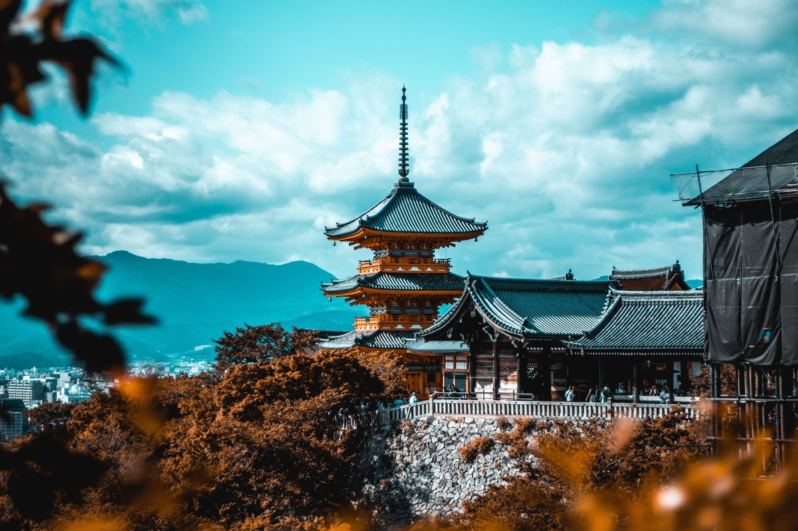
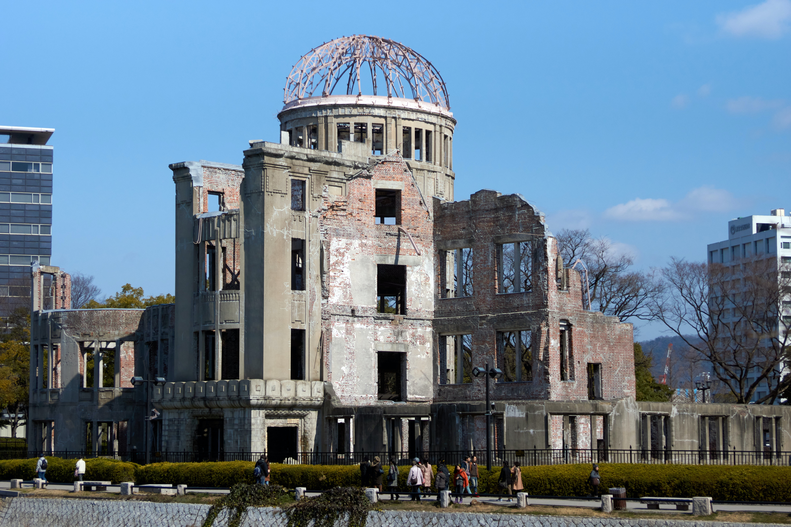
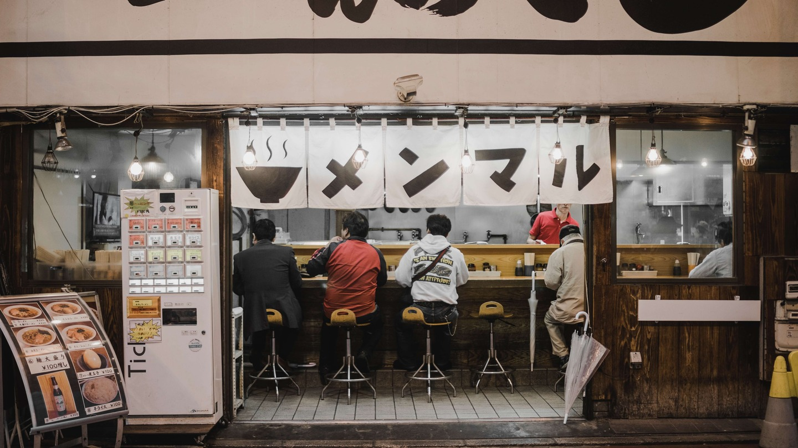
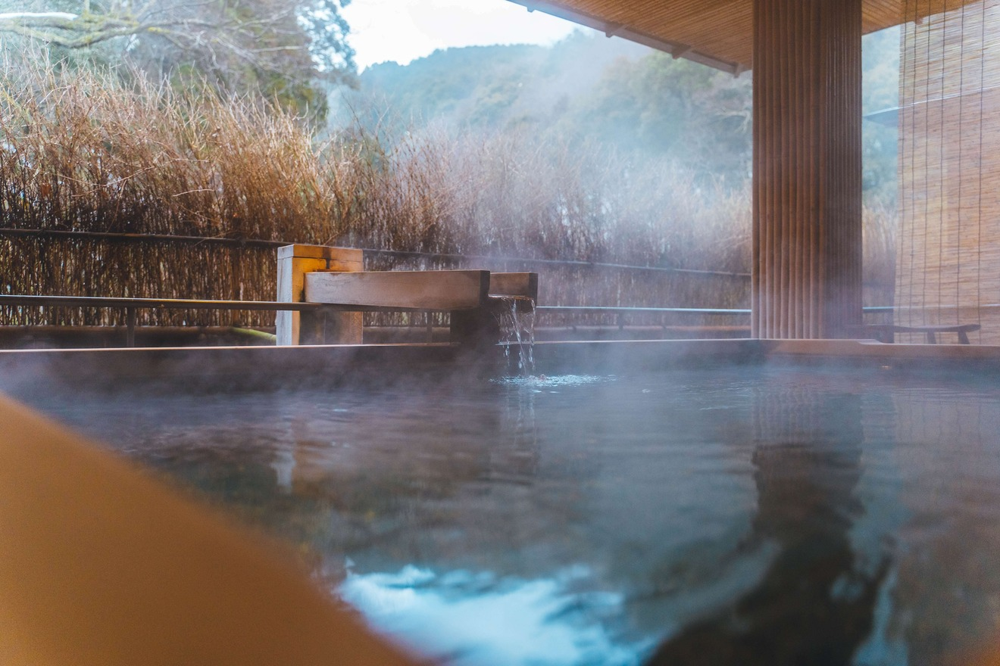

Introduction
Japan, a land of captivating contrasts, beckons travelers with its harmonious blend of ancient traditions and cutting-edge modernity. From the bustling streets of Tokyo to the serene temples of Kyoto, a trip to Japan promises a kaleidoscope of experiences that leave an indelible mark on your soul. Embark on a virtual journey with us as we explore the enchanting beauty of this captivating country.
Tokyo: A Metropolis Alive with Energy
Tokyo, the bustling capital of Japan, stands as a vibrant testament to the fusion of tradition and modernity. This sprawling metropolis, pulsating with life, encapsulates a harmonious blend of historical reverence and cutting-edge innovation. From the iconic neon-lit streets of Shibuya to the serene gardens surrounding the Imperial Palace, Tokyo offers an unparalleled journey through time and culture.
The city's energy is palpable from the moment you step onto its bustling streets. As dawn breaks, the Tsukiji Fish Market comes alive with a flurry of activity, showcasing the city's deep-rooted connection to its maritime heritage. Amidst the frenetic pace, ancient temples and shrines like Senso-ji in Asakusa offer a tranquil retreat, reminding visitors of Tokyo's spiritual essence.
Awe-inspiring skyscrapers, such as the Tokyo Skytree and the Tokyo Tower, punctuate the skyline, reflecting the city's modern ambitions. The Shibuya crossing, a symbol of Tokyo's vivacity, transforms into a mesmerizing dance of pedestrians at every traffic light change, epitomizing the city's ceaseless movement.
Tokyo, Japan

Culinary adventures in Tokyo are an essential part of the experience. The city is a culinary melting pot, boasting a dizzying array of gastronomic delights, from sizzling street food stalls to Michelin-starred restaurants. Whether you're indulging in delectable sushi at a hidden gem in Ginza or savoring a bowl of savory ramen in a humble alleyway joint, Tokyo's food scene is a testament to its boundless energy and creativity.
The concept of "kawaii" (cuteness) is deeply embedded in Tokyo's cultural fabric, with Harajuku serving as its vibrant epicenter. Youthful fashion, eccentric styles, and an unapologetic celebration of self-expression thrive in this district, underlining Tokyo's role as a global trendsetter.
Tokyo's dedication to innovation is evident in its technological advancements and futuristic city planning. High-speed trains whisk through the city, seamlessly connecting neighborhoods, and the Akihabara district offers a glimpse into the world of anime, manga, and electronic gadgets that shape modern Japanese pop culture.
Kyoto: Tranquility Amidst Tradition
Nestled amidst the lush landscapes of Japan, Kyoto stands as a serene sanctuary that whispers stories of centuries past. Renowned for preserving the country's cultural essence, this city offers a tranquil escape from the modern world while celebrating its rich history and traditions.
Kyoto's streets are like pages from a historical novel, where each corner exudes a sense of reverence for the past. The city's architectural marvels, from the resplendent Kinkaku-ji (Golden Pavilion) to the exquisite Fushimi Inari Shrine with its iconic torii gates, transport visitors to a time when intricate craftsmanship and spiritual devotion reigned supreme.
Wandering through Kyoto's traditional districts, such as Gion and Higashiyama, feels like stepping back in time. Wooden machiya houses line narrow cobblestone lanes, inviting contemplation and a gentle pace. The gentle rustling of leaves in well-tended gardens and the soothing sounds of water flowing in stone-lined streams create a symphony of tranquility that envelops the senses.
Temple, Kyoto

The heart of Kyoto beats within its ancient temples and Zen gardens. Places like Ryoan-ji Temple, famous for its minimalist rock garden, and the contemplative pathways of Kiyomizu-dera Temple offer spaces for reflection and meditation. The harmonious coexistence of nature and human craftsmanship in these spaces embodies the city's ethos of finding serenity within simplicity.
Traditional tea ceremonies, an art form rooted in Zen philosophy, epitomize Kyoto's commitment to preserving cultural rituals. Participating in a tea ceremony is an intimate experience that emphasizes mindfulness, bringing participants closer to the essence of Japanese culture.
Seasonal changes paint Kyoto with a shifting palette of colors and emotions. Cherry blossoms in spring and fiery maples in autumn transform the city into a canvas of natural beauty. Arashiyama's bamboo grove, where sunlight filters through towering stalks, offers an ethereal experience that lingers in memory long after leaving.
Hiroshima: From Tragedy to Triumph
Hiroshima, a city etched into history by a devastating event, has risen from the ashes to become a symbol of resilience, peace, and hope. The name once synonymous with tragedy now stands as a testament to the indomitable human spirit and the power of transformation.
The bombing of Hiroshima in 1945 during World War II left a deep scar on the city and its people. The aftermath was one of unimaginable destruction and loss, marking one of the darkest chapters in human history. Yet, from this tragedy emerged an unwavering resolve to rebuild, heal, and advocate for global peace.
Today, the Hiroshima Peace Memorial, also known as the Atomic Bomb Dome, stands as a haunting reminder of the city's past. This preserved structure, almost miraculously left standing amidst the ruins, is a UNESCO World Heritage Site and serves as a poignant symbol of the horrors of nuclear warfare.
Building from the Bombing, Hiroshima

Hiroshima's commitment to peace is evident in the Hiroshima Peace Memorial Park, a space dedicated to promoting a world free from nuclear weapons. At the heart of the park lies the Peace Memorial Museum, which chronicles the events leading up to and following the bombing. Its exhibits convey the human stories behind the statistics, urging visitors to reflect on the consequences of conflict.
The Hiroshima Peace Memorial Ceremony held annually on August 6th—the anniversary of the bombing—draws people from around the world to honor the victims and renew the call for peace. The event's centerpiece is a solemn moment of silence, observed at 8:15 a.m., the exact time the bomb was dropped.
But Hiroshima's story is not only one of tragedy; it's a story of triumph over adversity. The city's transformation into a vibrant hub of culture, education, and innovation showcases the power of human resilience. Its commitment to peace has led to advocacy efforts and initiatives to prevent the use of nuclear weapons, garnering international recognition and support.
Nara: Where Nature and History Collide
Nara is a city where the past and present seamlessly intertwine, and where nature's beauty is interwoven with a rich tapestry of history and culture. Often referred to as the birthplace of Japan's traditions, Nara offers a captivating journey through time, where ancient temples and lush landscapes converge in perfect harmony.
One of Nara's most iconic features is its population of freely roaming deer, considered sacred and protected as national treasures. These gentle creatures are a living connection to Nara's storied past, symbolizing the city's harmony between humans and nature. Visitors can stroll through Nara Park, hand-feed the deer, and capture moments that bridge the gap between the urban world and the wild.
At the heart of Nara lies the magnificent Todai-ji Temple, home to the awe-inspiring Great Buddha statue. This colossal bronze figure, the largest of its kind in Japan, stands as a testament to the city's historical significance and architectural prowess. The surrounding temple complex transports visitors to an era of spiritual devotion and meticulous craftsmanship.
Deer in a temple, Nara

The intricate beauty of Nara's UNESCO-listed temples and shrines, such as Kasuga Taisha with its lantern-lined paths and serene atmosphere, invites contemplation and reverence. These ancient sites embody the city's role as a cultural nucleus, preserving Japan's artistic and spiritual heritage.
Nara's historical importance extends beyond architecture. Heijo Palace, a UNESCO World Heritage Site, once served as the capital of Japan during the Nara Period (710-794), showcasing the city's pivotal role in shaping the nation's governance and culture.
Nara is also renowned for its traditional arts and crafts. Nara National Museum houses a vast collection of artifacts, offering insights into the city's artistic evolution. Visitors can witness the delicate art of Nara-yaki pottery and experience the intricate beauty of Nara calligraphy, both reflective of the city's dedication to preserving and promoting its artistic legacy.
Savoring Culinary Delights
Japan's culinary scene is a captivating symphony of flavors, textures, and traditions that invites travelers on a gastronomic journey like no other. From the elegance of sushi to the comfort of ramen, Japan's cuisine is a testament to its rich cultural heritage and unwavering commitment to culinary excellence.
Sushi, perhaps Japan's most iconic dish, showcases the artistry of simplicity. Delicate slices of fresh fish atop perfectly seasoned vinegared rice create a harmonious balance that embodies the essence of Japanese cuisine. Whether enjoyed at a traditional sushiya or a bustling conveyor belt sushi restaurant, the experience is a celebration of meticulous craftsmanship and unparalleled freshness.
Ramen, on the other hand, offers a hearty and comforting embrace. This beloved noodle soup has countless regional variations, each with its own distinctive broth, toppings, and style. Whether it's the rich tonkotsu ramen of Fukuoka or the soy-based shoyu ramen of Tokyo, every bowl tells a story of local tastes and culinary ingenuity.
Traditional Restaurant, Osaka

Tempura showcases Japan's mastery of frying techniques. Delicate ingredients such as seafood, vegetables, and even sweets are coated in a light batter and quickly fried to crispy perfection. The result is a dish that highlights the natural flavors and textures of each component, offering a delightful contrast between the crispy exterior and the tender interior.
Kaiseki, a traditional multi-course meal, is a true culinary art form. Originating from the intricate rituals of the tea ceremony, kaiseki showcases the seasons through an array of meticulously prepared dishes that are as visually stunning as they are delicious. From the appetizer to the dessert, every course is thoughtfully designed to create a harmonious progression of flavors.
Street food in Japan is an adventure in itself. Takoyaki, octopus-filled savory balls, sizzling yakitori skewers, and fluffy taiyaki pastries are just a few examples of the delectable street treats that tempt passersby. These quick bites offer a glimpse into the everyday flavors that locals love and cherish.
The Onsen Experience: Rejuvenation and Relaxation
In the heart of Japan's cultural tapestry lies a serene tradition that transcends time—the onsen experience. Nestled amidst picturesque landscapes, onsen (hot spring) baths offer a sanctuary for rejuvenation, relaxation, and an intimate connection with nature. This centuries-old practice not only soothes the body but also nurtures the spirit, creating an unforgettable journey of tranquility.
Onsens are geothermal wonders that harness the Earth's healing powers. These natural springs are often rich in minerals, with each onsen offering unique therapeutic benefits. From skin nourishment to stress relief, the mineral-rich waters are believed to have the ability to restore balance and vitality.
The onsen experience is a holistic journey that begins with a mindful embrace of the surroundings. Traditional ryokans (inns) and resorts often boast onsens that are thoughtfully integrated into the landscape, whether it's overlooking snow-capped mountains, nestled in forested hills, or beside a tranquil river. The act of soaking becomes an opportunity to savor the beauty of nature, creating an indelible connection between the bather and the environment.
Onsen, Hakuba

Before entering the onsen, a cleansing ritual is observed to honor the sanctity of the waters. Once immersed in the warm embrace of the thermal springs, time seems to stand still. The sensation of tension melting away and the soothing caress of the water against the skin create an oasis of tranquility, inviting deep relaxation and introspection.
The onsen experience extends beyond the physical; it is also a cultural immersion. Sharing an onsen with others fosters a sense of camaraderie and connection, transcending language barriers. Conversations become leisurely exchanges, and bonds are formed as stories are shared amidst the steamy embrace of the waters.
Conclusion: A Journey Beyond Borders
In a world that often moves at a relentless pace, seeking solace in experiences that nourish the soul and foster a deeper connection with both nature and culture is essential. Whether savoring culinary delights that tell stories of tradition and innovation, embarking on a journey through the historical tapestries of ancient cities, or surrendering to the healing embrace of natural hot springs, these immersive encounters offer us a chance to pause, reflect, and rediscover the beauty in simplicity.
From the vibrant streets of Tokyo to the tranquil temples of Kyoto, from the poignant history of Hiroshima to the serene landscapes of Nara, Japan presents a rich canvas of contrasts. It is a country where modernity coexists with tradition, where the past is woven into the fabric of the present, and where nature's beauty is celebrated in harmony with human endeavors.
And through it all, the essence of Japan is captured: an unyielding spirit of resilience, an unwavering commitment to peace, and a profound appreciation for the art of living. Whether savoring the intricate flavors of Japanese cuisine or immersing oneself in the meditative embrace of an onsen, these experiences are not just moments—they are gateways to deeper understanding, rejuvenation, and the reminder that in the embrace of culture and nature, we find our truest selves.